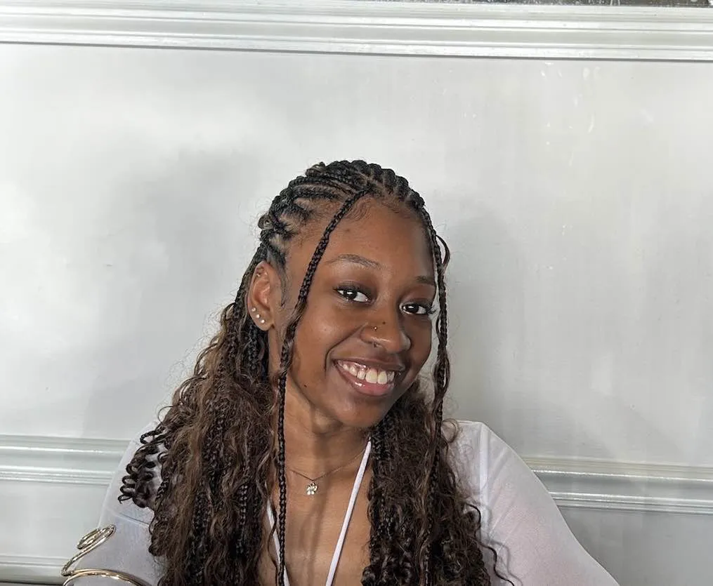

StoryQuest
Teamwork Prevails
Storyquest: Teamwork Prevails!
[Report Issue on Jira] [Deploy Docs] [Documentation Website Link]
Project Overview
We will develop a game, called "Storyquest: Teamwork Prevails", that aims to maximize communication between children who use Augmentative and Alternative Communication (AAC), and children who communicate verbally. This game will be turn-based, and use pictures to encourage communication and collaboration among players.
Keywords
- AAC - Augmentative and Alternative Communication
- Cloze Phrase - A common technique leveraged in speech therapy. Phrases or sentences with words missing that are intended to be filled in by the reader/listener. Cloze phrases are used to assess reading comprehension and to help students learn to predict word meanings.
Hosted Link
These are the active domains you can visit: User Friendly Domain (set to shut down in June): https://storyquest.world
OR
The original Firebase Domain (which Temple will take over after the final demo): https://project-aac-game-team-b--storyquest-fcdc2.us-central1.hosted.app
How to run locally
Be sure to have your Firebase configured after doing these steps, otherwise some features may not work as intended!
Also keep in mind that this app was intended for Tablets held horizontally!
Installation:
- First you have to make sure that you have Node installed on your computer. You can check this by navigating to a terminal, typing "npm -v" or "node -v" to find out which version you have. If you don't have it downloaded head over to https://nodejs.org/ to follow the instructions on downloading or updating.
- After making sure you have node installed, open up a terminal and navigate over to where you want to keep project, for example on your Desktop or if you have a special folder for your IDE's projects. Once there type in "git clone repo-url", where the "repo-url" would be the url of the GitHub Repo. You can find it under a green button called "Code", click it and copy the url for HTTPS. Hit enter and you should now have a repo cloned onto your local machine.
- When in the Projects Root Folder, navigate over to a folder called "StoryQuest". That is the App's root folder. After you have cd'ed into it, be sure to run "npm install" so our dependencies are installed from our package.json too.
- To run the project locally, type in "npm run dev". Your local host 3000 port should now have it live. If you are on the same wifi network as a tablet you can type in the ip address/3000 as long as you have it running to make debugging easier. The terminal should show you the url as well, right under the localhost url!
FireBase Setup (in StoryQuest directory):
Go to this url: https://firebase.google.com/docs/web/setup and follow the steps.
The following steps are for the initial setup:
- Create a FireBase project and register your app on the website with an account.
- Install the SDK and initialize FireBase with whatever JavaScript framework you are using, we used Nexts.js.
- After setup, be sure to pick which services you need for the project, we used the App Hosting (NOT Hosting which will not work with a Next.js Project) and FireBase FireStore.
Project Abstract
This project is a web-based, tablet-friendly "cloze phrase" style story game designed for children to learn how to collaborate, with special considerations regarding players who use Augmentative and Alternative Communication (ACC). In order to promote social inclusion and empathy, the game relies on teammates all communicating and working as a team in order to get the story complete. This is done so AAC users don't feel ostracized and are actively needed in the group. An easily accessible AAC-friendly interface ensures easy participation. The interface dynamically changes throughout the game, indicating player choice, turn taking, story progress, a final read through, and an auto redirect completion page.
High Level Requirement
-
User Experience (UX) and Design
Bright, colorful, and appealing design: Use vibrant colors and friendly, playful graphics to make the app visually engaging for kids.
Simple navigation: Ensure the interface is easy for children to understand and use. Buttons should be big, clear, and intuitive.
Age-appropriate design: Tailor the experience to the target age group (e.g., for younger kids, minimize text and use icons or pictures).
-
Accessibility
Audio cues and narration: Some children may not be able to read yet, so using voiceover narration and sound effects was needed.
Adjustable difficulty levels: Include settings to adjust the game difficulty to match the child’s skill level.
-
Engaging Content
Interactive elements: Kids should feel involved and rewarded during the game. Include interactive features like rewards and animations.
-
Multiplayer/Collaboration Features
Cooperative gameplay: Enable teamwork with easy communication.
Conceptual Design
The website will be built with the Next.js Framework primarily for the front-end, and with Firebase for the back-end. The language specifically is TypeScript and we are using TailWind CSS. Docusaurus and GitHub Pages will keep track of project progression. We will use Firebase Hosting to seemlessly deploy the game.
Background
Many current tools on the market are geared towards engaging AAC users, such as the AAC Language Lab or AssistiveWare. The AAC Language Lab has web-based games based on stages of learning, and requires a subscription model to use. There is a gap in the market for learning games based in collaboration between AAC users and non-AAC users. StoryQuest aims to create a collaborative environment for AAC and non-AAC users to engage in play. In a study by Schwartz et al., the 31 preschool children with significant developmental disabilities who learned to use Picture Exchange Communication Systems to communicate with adults after 11 months, also learned to communicate with peers without disabilities after an additional 3 months of intervention in integrated, play-based activities. Social interactions for development remains important at the grade-school level.
Required Resources
Front-End Development
Next.js Framework: A React-based framework to build the website and game logic. Next.js will handle SSR (Server Side Rendering) and routing, helping with performance and SEO.
TypeScript: The primary language for building the app, ensuring type safety and better development experience.
Tailwind CSS: For fast, responsive design that’s customizable and minimalistic.
Firebase: For seamless deployment and storing data.
Docusaurus: For maintaining project documentation and tracking progress, ideal for keeping all stakeholders in the loop.
GitHub Pages: For hosting documentation, a project roadmap, or related resources.
Back-End Development
Firestore: This real-time serverless backend will handle state persistence, interactions, and user data. It integrates well with Next.js for a smooth full-stack experience.
Authentication Service: Consider integrating user authentication (like Firebase Authentication or Auth0) to ensure safety and privacy, especially with children’s accounts.
Accessibility APIs: If the AAC device is connected via web standards, APIs like Web Speech API (for text-to-speech and speech recognition) might be useful.
Features
- AAC Keyboard
- Cloze Phraze Education
- Collaboration
- Difficulty Scaling
- Session Management
- Sustained Engagement
Bugs
- Prompt Security (rebuilding the app around an improved prompt tracking system would fix alot of bugs).
- Display changes depending on on system settings (Dark/Light).
- End Game Completion Page isn't triggered properly.
- Make it clear that the game is meant to be played horizontally on a tablet, but the host sets up the game on another screen.
- Improved waiting room.
- Rejoining the room if a player leaves, right now the game persists but they can join again.
- The announcement when a player doesn't choice is using the same speech synthesis, so it interrupts the autoreader at the end. Hence the longer time.
- "Start Adventure" gets cut off when we navigate to a new page when setting up.
- The player annoucement for when the player does not select, keeps going no matter what page you are on. So if you finish the story, it will still track 30 seconds and announce one more time.
- Home-page is black after we return to it after the auto redirect after the completion page.
- Images are overlapping the words at the end, a pop up with the story over the images would be good.
Collaborators
Nathalia Valli | Harpinder Singh | Molly Barron | Josh Varkley | Tiffany Truong |  Shayna Odle |